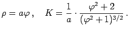

Inhalt Index DeskTop Bronstein

 Geometrie Differentialgeometrie Ebene Kurven Lokale Elemente einer Kurve
Geometrie Differentialgeometrie Ebene Kurven Lokale Elemente einer Kurve


| (3.460) |
Das Vorzeichen der Krümmung K gibt an, ob die Kurve mit ihrer konkaven Seite nach der positiven (K >0) oder negativen (K <0) Seite der Kurvennormalen zeigt (s. Kurvennormale). Anders ausgedrückt liegt der Krümmungsmittelpunkt für K >0 auf der positiven Seite der Kurvennormalen, für K <0 auf der negativen. Manchmal wird die Krümmung K prinzipiell als positive Größe aufgefaßt. Dann ist immer der Absolutbetrag des Grenzwertes zu nehmen.
| (3.461) |
Die Krümmung K ist in einem Punkt P um so größer, je kleiner der Krümmungskreisradius R ist.
| Beispiel A |
|
Für einen Kreis mit dem Radius a sind Krümmung K =1/a und Krümmungskreisradius R =a für alle Punkte konstant. |
| Beispiel B |
|
Für die Gerade ist K =0 und |
| (3.462) |
Daraus ergeben sich für die unterschiedlichen Definitionsformen der Kurvengleichungen verschiedene Ausdrücke für K und 
| (3.464) |
| (3.465) |
| Beispiel A |
|
|
| Beispiel B |
|
|
| Beispiel C |
|
|
| Beispiel D |
|
 |